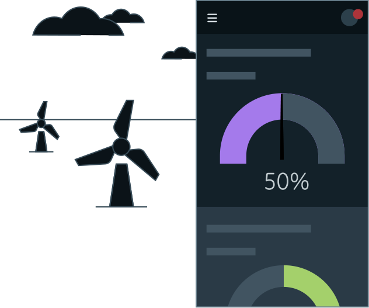

<!-- Dependencies -->
<link rel="import" href="../../bower_components/polymer/polymer.html" />
<link rel="import" href="../../bower_components/iron-media-query/iron-media-query.html" />
<link rel="import" href="predix-ui-hero-animation.html">

<!-- Styles -->
<link rel="import" href="../../css/px-hero-image-styles.html">

<dom-module id="px-hero-image">
  <template>
    <style include="px-hero-image-styles" is="custom-style"></style>

    <iron-media-query query='(min-width: 719px)' query-matches="{{largeScreen}}">
    </iron-media-query>
    <div class="wrapper">

      <div class="hero__text">
        <template is="dom-if" if="{{!dark}}">
          <picture class="hero__picture">
            <source srcset="../../img/home-page/predix_ds_logo.webp" type="image/webp">
            <source srcset="../../img/home-page/predix_ds_logo.png" type="image/png">
            
          </picture>
        </template>
        <template is="dom-if" if="{{dark}}">
          <picture class="hero__picture">
            <source srcset="../../img/home-page/predix_ds_logo_dark.webp" type="image/webp">
            <source srcset="../../img/home-page/predix_ds_logo_dark.png" type="image/png">
            
          </picture>
        </template>
        <p>Our user interface components enable you to quickly and easily create Industrial Internet web applications that run
          on dedicated Predix services and data.</p>
        <a href="/#/about/what-is-predix-ui" target="_top"><button class="btn btn--primary">Learn More</button></a>
      </div>


      <!--MOBILE-->
      <template is="dom-if" if="{{!largeScreen}}">
        <template is="dom-if" if="{{!dark}}">
          <picture class="hero-picture--bg">
            <source srcset="../../img/home-page/mobile_hero_bkd_light.webp" type="image/webp">
            <source srcset="../../img/home-page/mobile_hero_bkd_light.png" type="image/png">
            
          </picture>
          <picture class="hero-picture--fg">
            <source srcset="../../img/home-page/mobile_hero_light.webp" type="image/webp">
            <source srcset="../../img/home-page/mobile_hero_light.png" type="image/png">
            
          </picture>
        </template>

        <template is="dom-if" if="{{dark}}">
          <picture class="hero-picture--bg">
            <source srcset="../../img/home-page/mobile_hero_bkd_dark.webp" type="image/webp">
            <source srcset="../../img/home-page/mobile_hero_bkd_dark.png" type="image/png">
            
          </picture>
          <picture class="hero-picture--fg">
            <source srcset="../../img/home-page/mobile_hero_dark.webp" type="image/webp">
            <source srcset="../../img/home-page/mobile_hero_dark.png" type="image/png">
            
          </picture>
        </template>
      </template>

      <!--DESKTOP-->
      <template is="dom-if" if="{{largeScreen}}">
        <div class="hero-picture--bg">
          <predix-ui-hero-animation></predix-ui-hero-animation>
        </div>
      </template>

    </div>

  </template>
  <script>
    Polymer({
      is: 'px-hero-image',

      properties: {
        dark:{
          type: Boolean,
          value: false,
          reflectToAttribute: true
        },
        largeScreen: {
          type: Boolean,
          value: false,
          reflectToAttribute: true
        },
      }

    })
  </script>
</dom-module>
